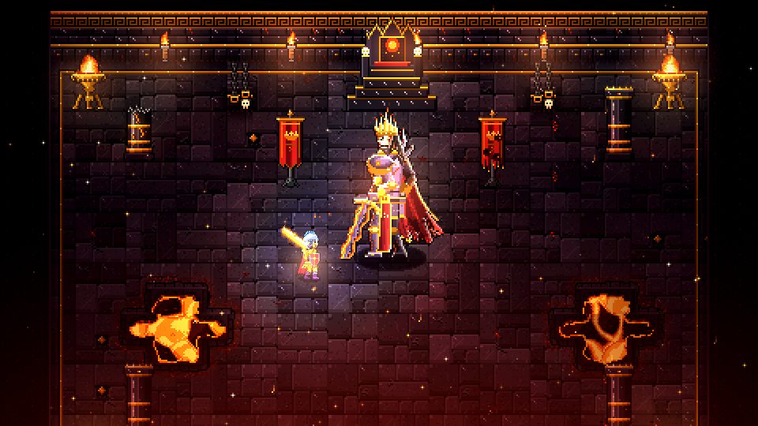
Eine Krone aus Flammen
Vor Generationen fiel Glut vom Himmel auf die Senke unter dem Aschegrat. Die Überlebenden bauten ihre Dörfer auf der erkalteten Asche wieder auf, und der Berg schwieg.
Jetzt schweigt er nicht mehr. Ignaroth war nur ein Diener. Die Spur der Flammenkrone führt über Steppe, Moor und Eis bis zu Malgareth, dem Aschenfürsten, der seit Jahrhunderten auf dem Aschethron sitzt.
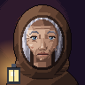
„Unter dem Knochenwappen glüht ein zweites Zeichen, eine Krone aus Flammen.“Maren, Dorfälteste
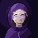
„Ich sehe … Feuer. Eine Krone. Und dich.“Ysolde, Seherin
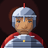
„Ignaroth ist gefallen, aber die Asche fällt weiter.“Hale, Kommandant der Rauhwacht
Die Welt
Jedes offene Gebiet hat seinen Dungeon. Von der Glutsenke bis zum Aschethron.
Stufe 1–20
-
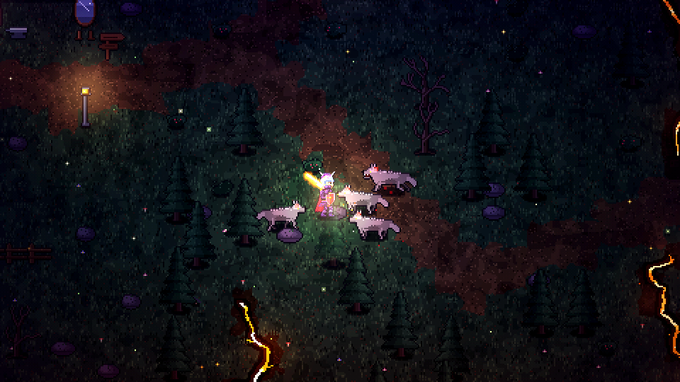
Die Glutsenke
Stufe 1–3Das letzte Dorf vor dem Berg. Nachts kommen die Aschewölfe bis an die Palisaden.
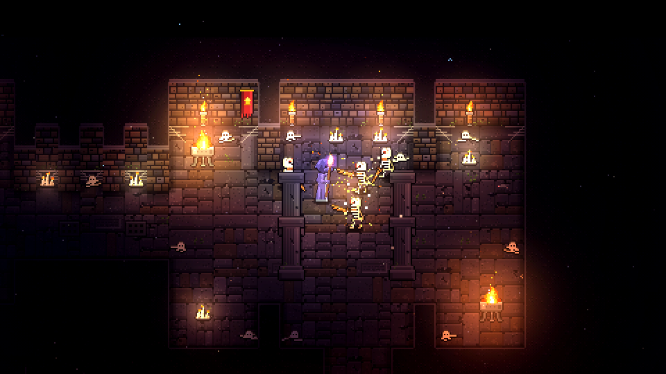
Die Katakomben
Dungeon · Stufe 3–6Gänge voller Knochen unter dem Dorf. Ganz unten steht ein Thron.
-
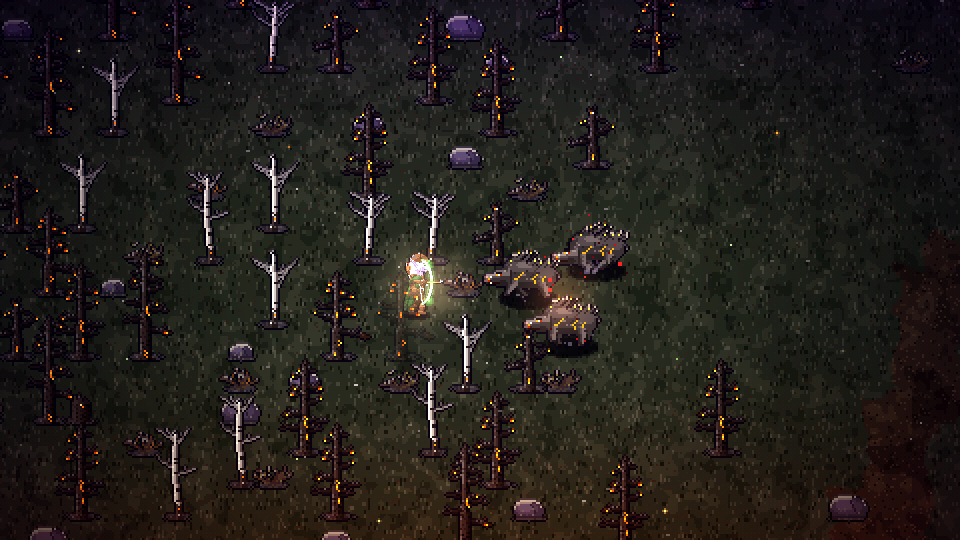
Der Aschenwald
Stufe 6–11Verkohlte Stämme, Keiler mit Glutborsten und die Lager von Rask, dem Brandschatzer.
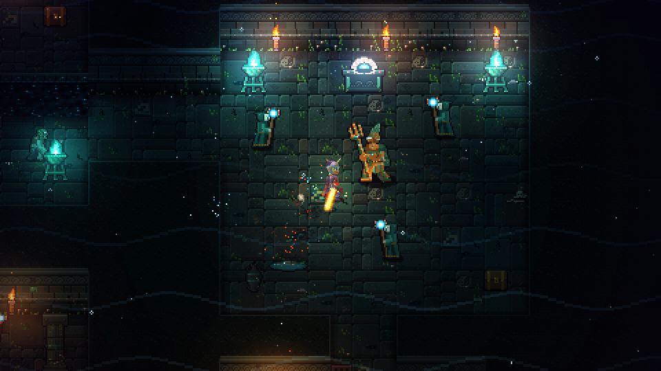
Der Versunkene Tempel
Dungeon · Stufe 10–12Ein überfluteter Tempel am See. Seine Kultisten singen noch immer.
-
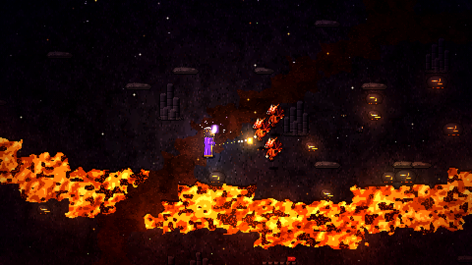
Die Schlackenhöhen
Stufe 12–17Feuerwichte, Magmahunde und der Schlackenkoloss.
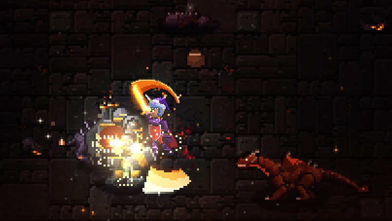
Die Glutschmiede
Dungeon · Stufe 17–20Glutschwinge, die Mutter der Drachen, bewacht den Weg zu Ignaroth.
Stufe 20–40
-
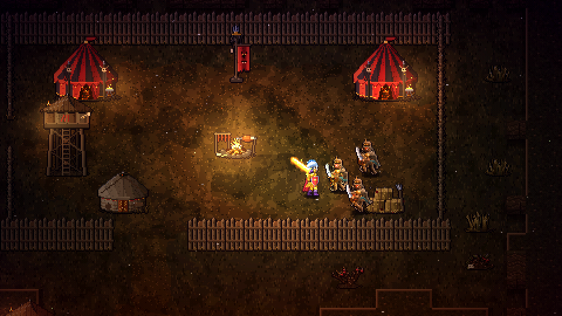
Die Aschensteppe
Stufe 20–25Plünderer unter Khars Bannern, Hyänenrudel und Aschegeier. Am Außenposten wartet Stallmeisterin Orla.
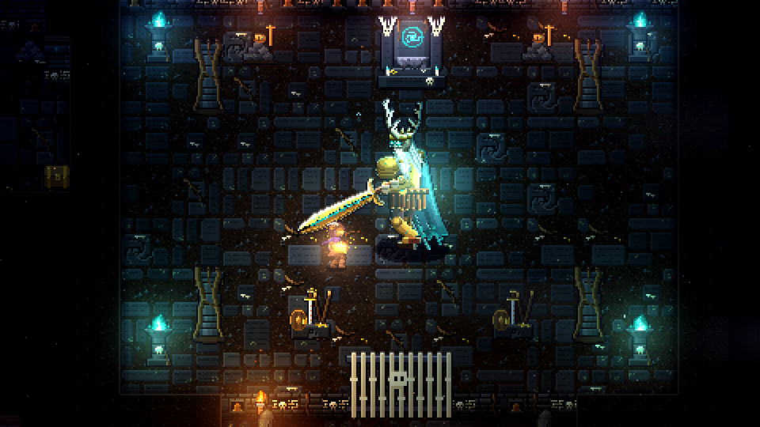
Das Heulende Hügelgrab
Dungeon · Stufe 24–26Unter der Steppe schläft Ulgrim, ein König, der nicht tot bleiben will.
-
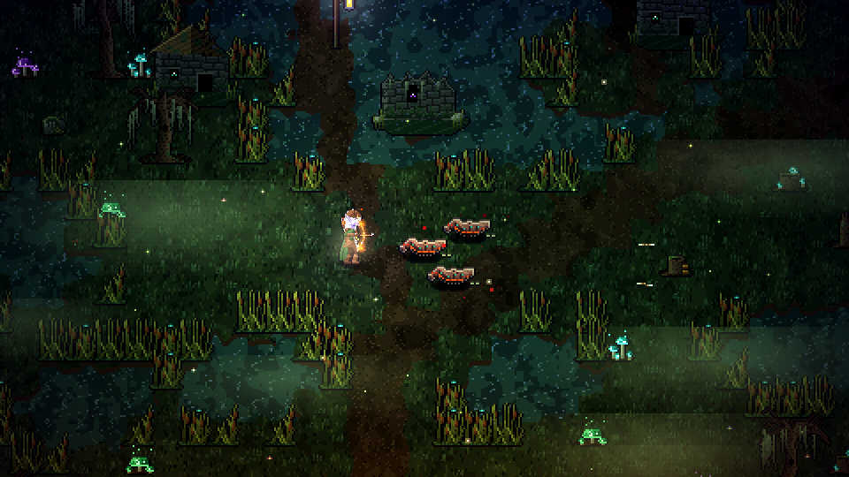
Die Faulmarsch
Stufe 25–31Moorlauerer, Faulschamanen und Seuchenkröten.
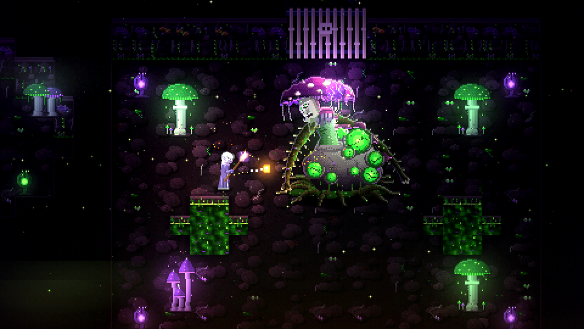
Der Sporenschlund
Dungeon · Stufe 30–32Pilze so groß wie Häuser. In ihrer Mitte wächst Mutter Fäulnis.
-
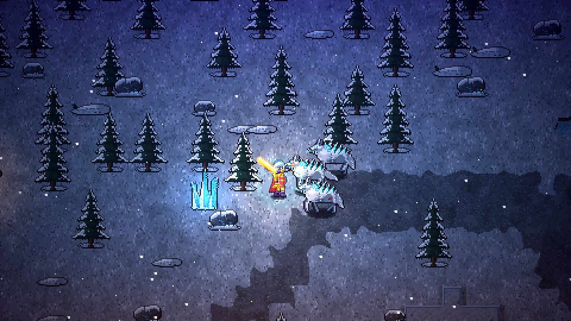
Die Frostzinnen
Stufe 31–36Eistrolle, Frostwölfe und Reifhexen. Frosthold hält die Pässe.
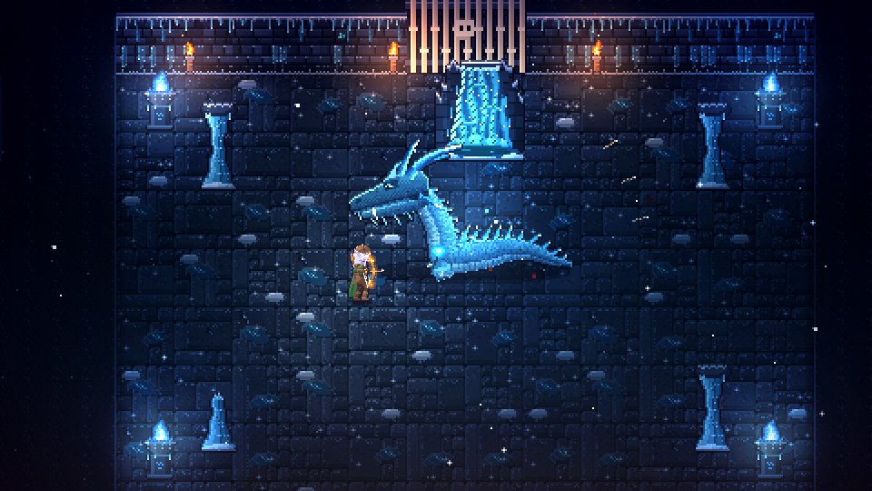
Die Reifhöhlen
Dungeon · Stufe 35–37Kristallspinnen, gefrorene Ritter und Skalvyr, einst Wächter dieser Berge.
-
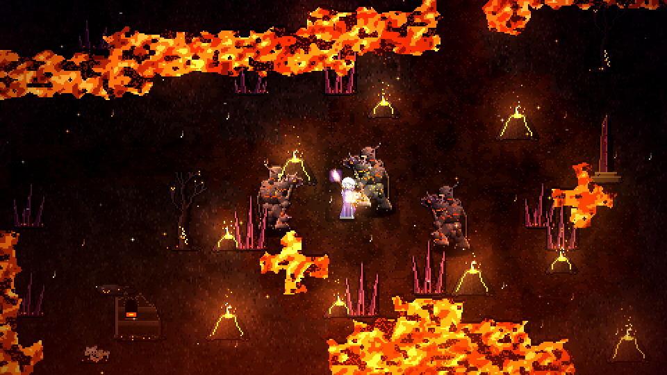
Die Glutöde
Stufe 36–40Aschegeister und Schlackenritter vor der letzten Bastion.
Der Aschethron
Dungeon · Stufe 38–40Malgareth wartet. Die Flammenkrone liegt auf seinem Haupt.
Völker
Frei mit jeder Klasse kombinierbar.
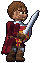
MenschHaben den Aschewintern getrotzt und erholen sich schneller als alle anderen.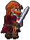
ZwergAus den Schmiedehallen unter dem Aschegrat. Rüstung wie eine zweite Haut.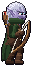
SchattenelfWanderer der Zwielichtwälder. Schnell und schwer zu treffen.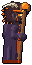
GlutgeboreneVom Glutfall gezeichnet. In ihren Adern glimmt Feuer.
Die Glutprüfungen
Nach Ignaroth öffnen sie sich ab Stufe 20 und wachsen bis Stufe 40 mit: dreißig Ränge, jedes Mal neu zusammengesetzt, jedes Mal mit einem Boss am Ende. Dazu 85 Quests, zwölf Rüstungssets und Hunderte Gegenstände.
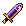
Königsfall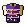
Harnisch des Aschenfürsten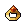
Siegel des Aschenfürsten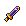
Schleierstecher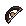
Morgensehne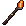
Stab der letzten Asche